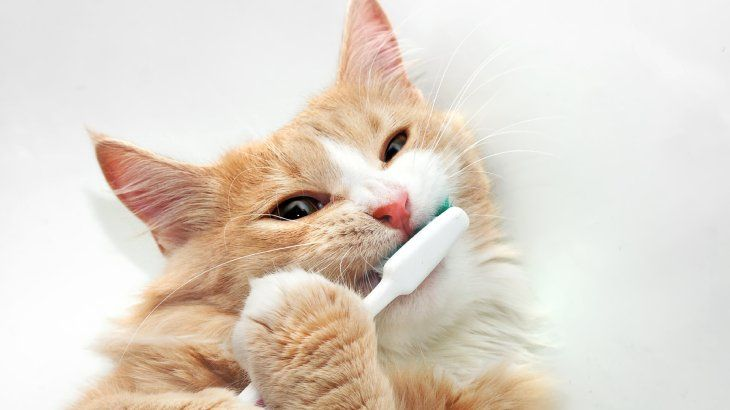
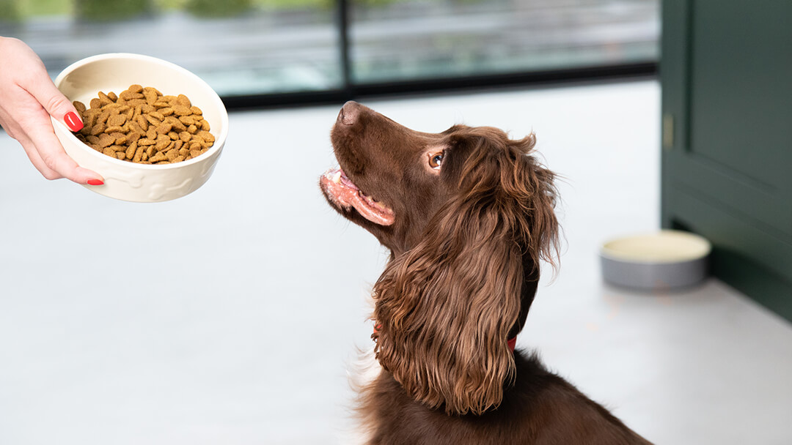

Guías Destacadas
Entrenamiento Básico para Cachorros
Aprende las técnicas esenciales para educar a tu nuevo cachorro.
Leer guía

Salud y Bienestar Felino
Consejos para mantener a tu gato sano y feliz en todas las etapas de su vida.
Leer guía

La Alimentación Correcta para tu Mascota
Descubre qué alimentos son los mejores según la especie y edad de tu animal.
Leer guía